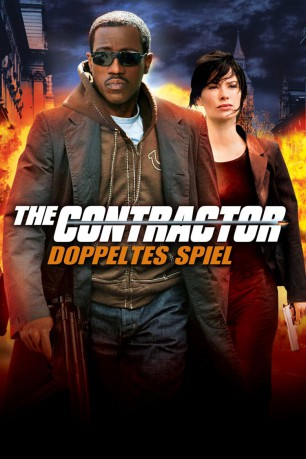
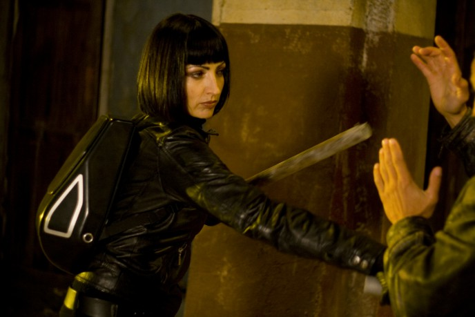

#3064 The Contractor - Doppeltes Spiel
Alternativ: The Contractor
 
 IMDB-Wertung: 5.5 / 10
IMDB-Wertung: 5.5 / 10  Metascore: 0
Metascore: 0 
Eigentlich hatte sich der ehemalige CIA-Agent James Dial aus seinem Beruf zurückgezogen, doch als er eines Tages gebeten wird nochmals einen Auftrag zu übernehmen, willigt er ein. Seine Mission führt in nach London, wo er einen gefährlichen Terroristen ausschalten soll. Dies gelingt ihm zwar, doch seine anschließende Flucht gerät außer Kontrolle. Schwer verletzt taucht er unter und freundet sich schon bald mit einem jungen Mädchen an, das ihm helfen will. Als man James plötzlich auch noch verdächtigt einen hochrangigen Polizisten ermordet zu haben, beginnt nicht nur die Polizei Jagd auf ihn zu machen.
Jahr: 2007
Dauer: 98 Minuten
FSK: 16
Land: Bulgarien Studio: Sony Pictures Home EntertainmentTonspuren:
Untertitel: Deutsch,
Auflösung: 720p (1280x720) Größe: 2734 MB
Genre: Action, Thriller, Drama
Regisseur:  Josef Rusnak
Josef Rusnak
Drehbuch: Robert Foster, Joshua Michael Stern, Robert Katz, André Farwagi
Soundtrack: Nicholas Pike
Darsteller:
 Wesley Snipes als James Dial
Wesley Snipes als James Dial- Eliza Bennett als Emily Day
 Lena Headey als DI Annette Ballard
Lena Headey als DI Annette Ballard Ralph Brown als Jeremy Collins
Ralph Brown als Jeremy Collins Charles Dance als DCS Andrew Windsor
Charles Dance als DCS Andrew Windsor Gemma Jones als Mrs. Day
Gemma Jones als Mrs. Day- Iain Robertson als Cramston
- Richard Harrington als Terry Winchell
 John Standing als Sir Anthony
John Standing als Sir Anthony Velizar Binev als Beloit
Velizar Binev als Beloit- Ceri Mears als Immigration Officer
- S.J. Evans als Man on Street , uncredited
- Martin Owen als Policeman , uncredited
- Ryan McCluskey als Purcell
- Stanimir Stamatov als King
- Miroslav Emilov als Harris
- Nikolai Sotirov als Ali Mahmud Jahar
- Peter Kerry Morgan als Newscaster
- Vladimir Kolev als SWAT team leader
- Richard Tunley als Technician
- Plamen Manassiev als Airport Security
- Morgan Hopkins als Detective
- Kiril Efremov als Security Guard
-  Marianne Stanicheva als Security Guard #2
- Hristo Mitzkov als Policeman #1
- Anelia Nikolova als Woman
- Lucy Cooper als Ticket Woman
- Svezhen Mladenov als Cop on Walkie-Talkie
- Harry Anichkin als Jahar's Lawyer
- Carlyn Paschall als Tourist , uncredited
Datei: X:\2007(A-F)\Contractor - Doppeltes Spiel, The (2007, FSK16, 1280x720).mkv seit 20.01.2016
Festplatte: HD 2007(A-Z)-2008(A-F)
 Es gibt insgesamt 65 Filme in der Gruppe '2007(A-F)'
Es gibt insgesamt 65 Filme in der Gruppe '2007(A-F)'